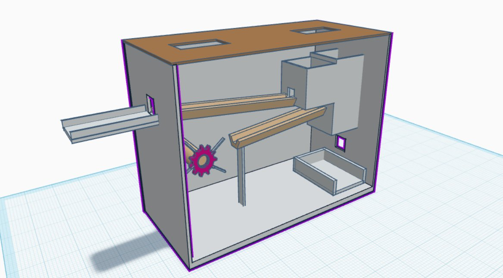

Machine de Rube Goldberg : Snack'O'Matic
Conception d'une réaction en chaîne complexe alliant ingéniosité et travail d'équipe.

Rôle
Concepteur & Modélisateur 3D (Tinkercad)
Contexte
Workshop EPSI 2025
Résultat
🏆 1ère place (Local) -> Qualification Nationale
Le Défi & Concept
L'objectif était de concevoir et réaliser une machine de Rube Goldberg dans un cadre purement collaboratif. Le défi consistait à créer un dispositif complexe effectuant une tâche simple via une réaction en chaîne délibérément élaborée, alliant ingéniosité technique et créativité.
Conception Collaborative
Ce projet a été réalisé en équipe, nécessitant une coordination parfaite entre les différents modules de la machine. Nous avons dû gérer la physique des objets, la précision des déclencheurs et le timing global pour assurer une séquence fluide sans intervention humaine.
Conception numérique
Modélisation 3D réalisée sur Tinkercad pour planifier les interactions mécaniques avant la construction.

Présentation & Victoire
Le projet a été présenté avec succès devant un jury académique. Grâce à la complexité technique et à l'originalité de notre réalisation, nous avons été sacrés gagnants au niveau local (2025). Cette victoire nous a ouvert les portes pour une participation au niveau national, représentant l'excellence de notre campus.
Certificat "Gagnant Local Workshop 2025"
Voir le document officiel (PDF)